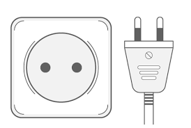
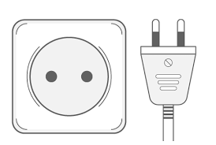

Tailândia (Ratcha Anachak Thai / ราชอาณาจักรไทย)
Dentre todos os países que já visitei, para mim a Tailândia reina absoluta como o melhor país para se visitar, e o fato deste ser por diversos anos o país mais visitado do mundo comprova que isso não é nenhum exagero de minha parte.
A Tailândia é um país exótico que conta com uma combinação de praias e ilhas paradisíacas (que impressionaram até a mim, que nem sou dos maiores fãs de praias), modernidade convivendo em harmonia com antigo, templos ricamente decorados e mantidos com absoluto esmero, comida deliciosa, preços baixos, relativa segurança, várias atrações interessantes, regiões que variam entre litoral e montanhas, boa infraestrutura turística, etc.
Você pode alegar que essa combinação pode ser encontrada em outros países também, e sim, você está correto. Mas há um diferencial fundamental aqui que talvez seja o grande motivo da Tailândia ter se tornado esse fenômeno turístico mundial: o seu povo.
Pergunte à qualquer pessoa que tenha visitado o país sobre quais as coisas das quais ela mais gostou na viagem.
Certamente o povo, as pessoas, estará entre as respostas.
Não é a toa que a Tailândia é conhecida como "Land of Smiles" (Terra dos Sorrisos). Eles realmente fazem juz a esse apelido.
Seja nas lojas, nas barraquinhas de comida nas calçadas, nos encontros casuais com os moradores locais, você geralmente é recebido com um sorriso, às vezes acompanhado de um "wai" (uma saudação tailandesa, com as palmas das mãos encostadas e os dedos na altura do rosto ou da testa).
A sociedade tailandesa é conceitualmente admirável em diversos aspectos, e devido à influência chinesa é também influenciada pelo filósofo chinês Confúcio (551 AC-479 AC) e suas 3 harmonias: o mundo humano, a natureza e o mundo espiritual.
A religião oficial do país é o Budismo, praticado por 94,6% da população (segundo último censo, de 2000), baseado no conceito de Karma e em seus ciclos de reencarnação até o Nirvana (estágio em que se atinge a iluminação suprema). Devido o fato do Budismo ter sido levado à Tailândia por monges do antigo Ceilão (atual Sri Lanka), a vertente praticada pela grande maioria dos tailandeses é a Therevada, que é a vertente original, com algumas diferenças com relação ao Budismo de países como Coreia do Sul, Japão e China.
Na Tailândia o Budismo compartilha vários elementos com o Hinduísmo.
Embora haja muita coisa boa para falar sobre o país, nem tudo são flores.
Como em praticamente qualquer grande destino turístico há casos de golpes em turistas, batedores de carteira e até casos de violência grave contra turistas, às vezes até homicídios, mas claro, não são a regra, e nem de perto pode-se comparar os números da criminalidade de Bangcoc com uma cidade turística de porte similar como Buenos Aires ou Rio de Janeiro, por exemplo. Há um abismo de diferença na questão da segurança pública entre Brasil e Tailândia.
O interior e até a enorme Bangcoc são de uma forma geral bastante seguras para turistas.
Maiores precauções e atenção redobrada é necessária apenas no extremo sul do país, próximo à fronteira com a Malásia, onde grupos terroristas islâmicos conduzem ataques contra budistas, muitas vezes plantando bombas em locais públicos e matando civis.
Assim sendo, as províncias do extremo Sul não são muito indicadas para o turismo.
Quanto ao resto do país, ande tranquilo pelas ruas tomando as precauções que tomaria em qualquer lugar, até mesmo na Europa, Canadá, Austrália, etc. É como eu sempre penso ao viajar: melhor "pecar" por excesso de cuidado do que pela falta.
Turisticamente falando, os cerca de 35 milhões de visitantes anuais dividem a Tailândia em 4 regiões: a Tailândia Central (Bangcoc, Pattaya, Ayutthaya, Kanchanaburi, Lop Buri e Ko Chang), do Norte (Chiang Mai, Chiang Rai, Mae Hong Son, Sukhothai, Lamphun, Lampang e Si Satchanalai), do Sul (Phuket, Krabi, Phi Phi, Ko Samui e Ao Phang Nga) e do Nordeste (Phimai).
Resumidamente, aconselha-se que uma viagem ao país contemple pelo menos visitas à Chiang Mai, próxima à fronteira com Mianmar e Laos, à Bangcoc (a capital, obrigatoriamente, e proximidades do tipo "bate-e-volta", como Ayutthaya e Pattaya) e às praias de Ko Samui e Phuket.
Informações úteis
O que preciso para entrar na Tailândia?
Brasileiros precisam de um passaporte com um prazo de validade restante de pelo menos 6 meses, do Certificado Internacional de Vacinação Contra Febre Amarela *, que deve ser apresentado antes da chegada ao balcão de imigração, em um setor da vigilância sanitária local, facilmente identificado por uma boa sinalização no Aeroporto Internacional Suvarnabhumi. Somente depois de preencher um formulário e apresentar tal certificado à autoridade sanitária o passageiro estará pronto para se dirigir à imigração.Não é necessária a obtenção prévia de visto, já que brasileiros recebem o visto de turismo na chegada (visa on arrival), que dá direito a permanecer 90 dias no país, com direito à múltiplas entradas durante esse período. Pode acontecer deles implicarem com entradas e saídas durante o período do visto. Aconteceu comigo uma vez, mas caso aconteça, basta mostrar que está dentro dos 90 dias desde a sua chegada, e que o visto é de múltiplas entradas durante esse período.
Entra-se no país geralmente por Bangcoc, através do Aeroporto Internacional Suvarnabhumi (pronuncia-se su-wan-na-pum), um moderno e belíssimo aeroporto inaugurado em Setembro de 2006.
Em 2012 o aeroporto foi o local mais fotografado do mundo no site Instagram!
Até 2014 o aeroporto tinha a maior torre de controle de tráfego aéreo do mundo.
O trajeto do aeroporto até a área central de Bangcoc pode ser feito facilmente com táxis, ônibus expressos ou com o Airport Rail Link, que liga o aeroporto até a Estação Phaya Thai, do metrô de superfície BTS Skytrain.
* Para obter o certificado internacional de vacinação contra a febre amarela, você deve tomar a vacina, carimbar seu certificado nacional de vacinação e levar este certificado carimbado até um posto da Anvisa (presente em diversos aeroportos do país) para a confecção do certificado internacional, que deverá ser apresentado no órgão sanitário tailandês ao chegar no país. Após levar seu certificado nacional de vacinação na Anvisa, eles vão estipular um prazo para a confecção e liberação do seu certificado internacional, portanto, tome as vacinas com um tempo razoável antes da viagem, para ter tempo hábil de encaminhar e receber o certificado internacional.
A moeda tailandesa

As notas são de 20, 50, 100, 500 e 1000 Bahts, e as moedas de 25 e 50 Satangs (muito pouco usadas e difíceis de se encontrar) e de 1, 2, 5 e 10 Bahts.
O câmbio é feito em aeroportos, casas de câmbio, agências bancárias ou quiosques de bancos em shoppings e nas principais áreas turísticas.
Como em qualquer lugar, ao chegar no aeroporto, não troque muito dinheiro, pois a cotação em aeroportos sempre é ruim. Troque apenas o suficiente para seu transporte até o hotel e para gastos até você chegar à um local de câmbio com melhores cotações.
Em 3/1/2022, a cotação era de U$ 1 = 33,33 Bahts, ou R$ 1 = 5,90 Bahts.
"Falando" Tailandês - ภาษาไทย (phasa thai)

A combinação da tonalidade com uma ortografia complexa, marcadores relacionais e uma fonologia diferente pode tornar o tailandês uma língua de aprendizado extremamente difícil para ocidentais.
Com 44 consoantes, 32 vogais e 5 acentos, é uma segunda língua nada fácil de se aprender.
Uma das primeiras coisas que o visitante perceberá é que apesar da dificuldade de compreensão do inglês por parte de alguns, as pessoas são hospitaleiras e simpáticas, algo natural ao povo, já que faz parte da cultura tailandesa, e isso facilita sua comunicação.
Ainda que a grande maioria dos turistas não fale tailandês e os tailandeses do "povão" não falem inglês, muitas coisas podem ser "ditas" com sinais, mímicas, inglês bem básico e "thainglish" (o equivalente ao nosso portunhol ou inglês precário). E muitas coisas podem ser facilitadas com um sorriso.
Há várias razões pelas quais o tailandês é uma língua extremamente difícil de se aprender, na escrita, em regras sociais que se refletem na língua e principalmente na pronúncia.
A invenção do alfabeto tailandês é atribuída ao rei Ramkamhaeng de Sukhotai, no ano de 1283.
Este alfabeto baseia-se no alfabeto Khmer, que por sua vez está ligado ao alfabeto indiano.
Posteriormente adaptaram-se vocábulos de origem Khmer enquanto que as palavras de 2 ou mais sílabas atribuem-se à influência do Sânscrito e do Pali.
O idioma tailandês atual é, portanto, o resultado de séculos de desenvolvimento.
Agora uma mini aula de tailandês:
Sawatdee é a forma usual de cumprimento, o "olá" de todo mundo. Mas nada é simples de se dizer em tailandês: o sawatdee não é dito simplesmente assim, "sávatdí".
Como vimos, o tailandês é uma língua bem complicada e mesmo num simples "oi" há regras sociais como as mulheres dizerem sawatdee kha (savatdí káa) e os homens sawatdee khrab (savatdí krûp).
NADA é simples em tailandês: Kohb koon, o "obrigado", também não é simples: o khob koon ka deve ser dito pelas mulheres, já os homens dirão khob koon khrap. Ou seja, para falar de maneira educada, mulheres usam kha e homens usam khrap para terminar as frases.
Felizmente muitos anúncios, sinais e placas de trânsito são escritos em tailandês e também em inglês, especialmente nas indicações mais necessárias aos turistas, como nas estações do Skytrain, por exemplo.
Tentar aprender algumas palavras básicas do idioma de um país que se vai visitar é sempre simpático e útil, mas cuidado, porque o tailandês é uma língua tonal e uma pequena variação de sotaque e entonação pode mudar completamente o sentido da palavra. E por ser uma língua tonal, ela não deve ser falada com entonações ocidentais, pois elas mudam o sentido da palavra, o que é apenas mais um dentre tantos outros complicadores do aprendizado do tailandês.
Tailandês para viajantes - Algumas palavras úteis:
Sim: tchái
Não: mái tchái
Obrigado: khôp khúnn
Muito obrigado: khôp khúnn mák
Por favor: ga-ru-ná
Olá: sá-wat-dí
Tchau: lar kôrnn
De nada / tudo bem: mái pên rái
Até já: yáo narn
Bom dia: sá wat dí torn cháo
Boa tarde: sá wat dí torn bái
Boa noite: sá wat dí torn khúm
Boa noite (para dormir): rá trí sá was / fan dí
Quando ir (o clima)

Frio não existe na cidade, em época alguma.
De uma forma geral, em quase todo o país o calor começa no meio de Janeiro e vai até Maio, quando a temperatura alcança os 40ºC e a umidade relativa do ar se aproxima dos 100%.
Já a estação das chuvas começa em Junho.
O "frio" começa em Outubro, mas é conhecido apenas por ser a época da seca e de temperaturas mais amenas, ou melhor, menos quente.
A umidade é constante em todas as estações, todavia é especialmente acentuada durante os meses mais quentes.
A estação mais "fria" tem dias mais frescos e agradáveis no sul do país. Já no norte, especialmente nas montanhas de Chiang Mai, pode de fato fazer frio.
A alta temporada é justamente esta, a dos dias com temperaturas mais amenas, com o consequente encarecimento dos preços em hotéis.
Cozinha tailandesa
Mas engana-se quem pensa que insetos fazem parte do cardápio dos locais. Na verdade muita pouca gente come insetos por lá, e isso é muito mais para chamar atenção de turistas do que para matar a fome de alguém.
Fiz amizade com vários tailandeses e nunca conheci nenhum que comesse insetos.
Mas você vai precisar de um estômago de avestruz se quiser comer como os tailandeses comem, caso contrário vai queimar seu estômago com tanta pimenta.
Eles colocam pimenta em praticamente tudo, e diversos tipos de pimenta.
Os temperos são ricos, e muitas das receitas são bem elaboradas. Aliás, a cozinha local é uma cozinha sofisticada: são condimentos e especiarias como coentro, alho, cominho, gengibre, manjericão, pimentão, limão... e claro, pimenta, muita pimenta.
Há pimentas de vários tipos, cores e formatos.
É comum encontrarmos nos pratos algumas frutas como coco, manga, goiaba e tamarindo integrando os ingredientes culinários... mas com pimenta!
As carnes são de vários tipos... com pimenta.
Há muitos pratos à base de massas, legumes e verduras, além de cogumelos... apimentados.
Pimenta é o feijão com arroz dos tailandeses. Fritos, assados, grelhados, cozidos na água e no vapor, todos os pratos levam pimenta. Vinagre com pimenta. Açúcar com pimenta. Pimenta agridoce. Molho de peixe com pimenta.
Pimenta nos olhos dos outros é refresco, mas em outras partes corpo pode ser um santo remédio, segundo um artigo na revista científica New Scientist que demonstra que a capsaicina, princípio ativo das pimentas, faz bem à saúde, alivia sinusite, além de ter até mesmo propriedades anticancerígenas. Mas outros estudos indicam que comer pimenta em excesso causa danos ao estômago, então cuidado ao comer na Tailândia.
As cozinhas baiana e tailandesa guardam algumas semelhanças: o uso dá água de coco, as especiarias, os ensopados e as pimentas, o coentro, o gengibre e o amendoim, além de em alguns pratos, o aspecto.
Praticamente toda a culinária tailandesa é feita à base de ingredientes frescos que vão dos legumes e verduras às frutas, carnes e peixes, com generosidade nos temperos à base de alho, condimentos, especiarias e... pimentas!
O arroz especialmente sem tempero e no ponto de papa, às modas chinesa e japonesa, é usado como veículo. Ah, eles colocam açúcar na comida e sal no suco de frutas!
E nas mesas tem sempre açúcar e pimenta como acompanhamento.
Tomadas e eletricidade
As tomadas da Tailândia são do tipo A (com hastes, estilo americano) e do tipo C (pinos roliços).A voltagem é de 220V/50 Hz.
 
A Tailândia é segura?

A Tailândia de forma geral é segura para turistas, mas cabem algumas ressalvas.
Com relação à Bangcoc, como em qualquer grande capital do mundo, ela tem seus batedores de carteira, mas nada que seja uma novidade para um viajante, ainda mais para brasileiros.
Os visitantes devem tomar cuidados naturais com eles, mas apenas nas regiões com grande concentração de turistas ou em áreas muito afastadas.
De maneira geral, a Tailândia não requer cuidados especiais e você pode andar com segurança e tranquilidade se tomar precauções simples que valem para qualquer cidade grande no mundo, até mesmo nas extremamente seguras. Tais cuidados incluem cuidar com as bolsas (dê preferência a mochilas), evitar o uso de joias muito chamativas em locais com grande aglomeração, evitar ostentações, andar com cópias de documentos deixando os originais no hotel, evitar andar com uma quantia muito grande de dinheiro, e ao sair separá-lo em lugares diferentes (bolsos, mochila, bolsa, carteira, etc).
As ruas tailandesas são seguras com relação à crimes, mas não necessariamente no trânsito, sobretudo em Bangcoc, e há muito mais chances de ter sua carteira batida ou roubada de dentro de uma bolsa ou mochila que você deixou descuidada do que de você ser assaltado, então, se possível use um pequeno cadeado no zíper da sua mochila, o mais discreto possível.
A maioria dos crimes contra turistas são os chamados "crimes de oportunidade", em que a situação já está engatilhada para o marginal, como por exemplo uma bolsa aberta com a carteira ou celular à vista. Roubos, com uso de violência ou ameaça, são bastante incomuns tanto entre turistas quanto entre os nativos.
Em multidões e aglomerações ponha a mochila ao lado do corpo ou na frente, como é recomendado em qualquer grande cidade, qualquer que seja o país.
Enfim, para quem está acostumado com os índices de criminalidade brasileiros, a Tailândia como um todo, e até mesmo Bangcoc, é muito segura.
Sei, por experiência própria, que é seguro andar sozinho à qualquer hora da noite, mesmo com uma câmera profissional na mão e sendo facilmente identificado como turista. Em várias oportunidades tive que andar de madrugada pelas ruas pois o Skytrain e o metrô já estavam fechados e nunca tive problema algum. Várias vezes fui ou voltei de noite ou de madrugada do meu apartamento, no bairro de Sathorn, até a estação de trem Hua Lamphong, no bairro de Pathum Wan, um percurso que levava mais de 1h30min a pé, sem ser abordado ou me sentir ameaçado (exceto por alguns cães de rua). E eu estava sempre com minha câmera NikonD5200 na mão, e as vezes com um tablet ou celular me guiando pelo Google Maps.
Convenhamos, isso nos grandes centros urbanos brasileiros seria praticamente pedir por um assalto.
Com relação à saúde, evite apenas ingerir água da torneira, bebendo água mineral. Atenção também ao seu estômago, pois nem todos aguentam os temperos tailandeses. Coma pouco nos primeiros dias para ver se não te faz mal.
Agora vamos à parte das ressalvas.
A única região do país que merece uma atenção maior é no extremo sul, próximo à fronteira com a Malásia, onde separatistas muçulmanos cometem atos terroristas contra civis, muitas vezes plantando explosivos em locais públicos.
Mais de 20.000 soldados do exército tailandês ajudam no patrulhamento das ruas das províncias ao sul, o que indica a gravidade da situação.
Se possível, evite a região.
De resto, o país costuma ser tranquilo para visitantes.